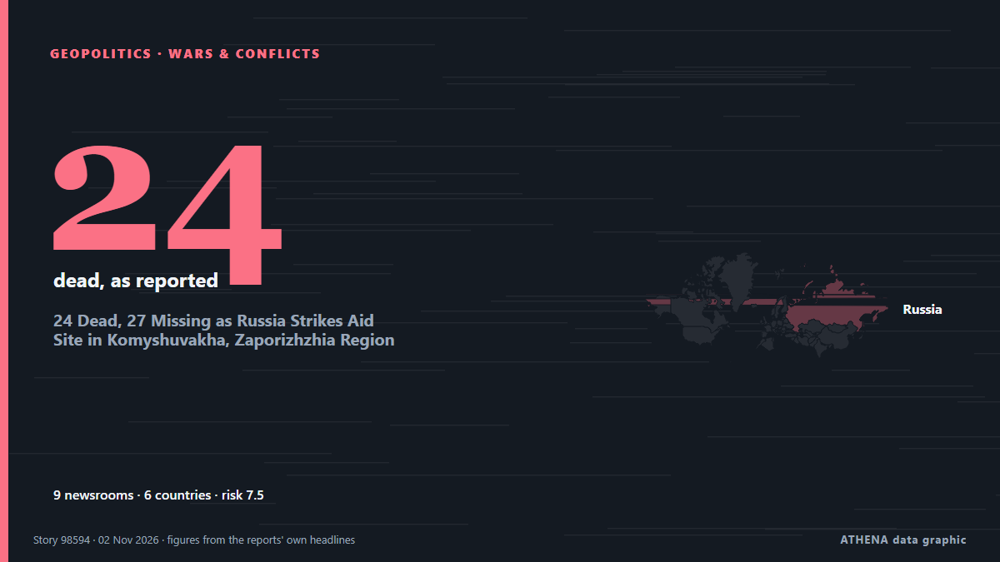

Wars & conflicts
SponsoredPresented by  Cybernetics and Artificial Intelligence Lab Welcome to the Cybernetics and Artificial Intelligence Laboratory, established at the Department of Business Administration of the National
Cybernetics and Artificial Intelligence Lab Welcome to the Cybernetics and Artificial Intelligence Laboratory, established at the Department of Business Administration of the National
| 20 Oct | 1 |
|---|---|
| 21 Oct | 0 |
| 22 Oct | 0 |
| 23 Oct | 0 |
| 24 Oct | 0 |
| 25 Oct | 0 |
| 26 Oct | 1 |
| 27 Oct | 1 |
| 28 Oct | 1 |
| 29 Oct | 0 |
| 30 Oct | 2 |
| 31 Oct | 7 |
| 1 Nov | 7 |
| 2 Nov | 4 |

24 Dead, 27 Missing as Russia Strikes Aid Site in Komyshuvakha, Zaporizhzhia Region
Russian guided aerial bombs (KABs) struck a school used for humanitarian aid distribution and a shelter in Komyshuvakha, Zaporizhzhia region on Monday, Nov. from Kyiv Post
Hebron governor says Israeli forces withdraw from city after 10-day siege
Hebron Mayor Youssef al-Jaabari says families forced from their homes can return and students can go to school. from Al Jazeera English
Oil prices plunge more than 4% as US-Iran talks raise hopes of ending war
Both oil benchmarks are down in early trading. from The Business Times
Zelenskyy: Ukraine will halt strikes on Russian refineries if US provides interceptors
President Volodymyr Zelenskyy has informed US media that Ukraine will stop targeting Russian oil refineries in exchange for Patriot interceptor missiles or halted Russian attacks. from Ukrainska Pravda (English)
Iran warns new war could last longer after Trump threatens strikes
Trump says the US still has to “take care of” one or two targets "but we can do that in 10 minutes". from The Straits Times
UN demands investigation into death of staff member in Houthi custody
A Yemeni staff member of the UN Human Rights Office has died in Houthi custody after being arbitrarily held for more than two years, the UN human rights chief has said. from Sky News (World)
Saudi civil defence sounds all-clear after alerts in southern cities
Nov 2 - Saudi Arabia's civil defence authority on Monday said the threat had passed shortly after issuing alerts for the southern and western cities of Khamis Mushait, Abha, Taif and Najran, amid… from The Straits Times
Iran warns of 'longer' war after Trump threatens strikes
The threat comes as fresh diplomatic efforts are under way to avert a resumption of fighting. from The Straits Times
Coalition Destroys 5 Houthi Ballistic Missiles, 4 Drones Fired at Saudi Arabia
Riyadh: Saudi forces on Tuesday intercepted a ballistic missile aimed at the kingdom's capital, said a spokesman for the Riyadh-led coalition backing Yemen's government, after auth... from Oman Observer
Russian strikes cut power to thousands in Ukraine as drones damage Russian facility
Russia says 235 Ukrainian drones downed overnight, Kyiv says 371 of 433 Russian long-range drones shot down. from Express Tribune
UAE says hoping for breakthrough yet 'braced for the worst' in Iran-US war
The United Arab Emirates is optimistic about a potential diplomatic breakthrough between Iran and the United States but remains prepared for a possible escalation in tensions, according to a senior… from Arab News
Trump says Iran war will end ‘very soon, one way or the other’
President Trump expressed optimism that the conflict with Iran would end soon, though he didn’t provide specific details on how this would occur. from Arab News
Ukraine claims strike on major Russian oil refinery near Moscow
Russia reports significant damage to an industrial facility in the Nizhny Novgorod region after a massive overnight drone attack, as Kiev claims it targeted the Kstovo oil refinery. from TRT World
Iran warns US, Israel against new attacks after Trump, Netanyahu threats
TEHERAN: Iran’s supreme leader warned the United States and Israel Saturday of fresh attacks following their threats to resume strikes after crucial elections, as fears increased over a return to… from New Straits Times
Iran’s army warns any new US attack would spread war wider
The warning came amid renewed diplomatic efforts to prevent fighting from resuming, including a visit by Qatari mediators to Tehran. from Free Malaysia Today
3 Killed as Ukraine Renews Drone Strikes Against Oil Refineries
Deputy Prime Minister Alexander Novak confirmed that Ukrainian drones targeted three oil refineries and one gas chemical complex overnight. from The Moscow Times
US attacks 2 Iranian fishing boats off Masan, Qeshm Island
Iranian state broadcaster IRIB, citing a Hormozgan province official, said on Saturday that the US attacked two fishing boats near Qeshm Island, leaving two fishermen missing and one wounded. from Business Recorder
US Costs of Iran War Rise to Over $47 Billion, According to Pentagon Estimate
More than $6 billion would be needed to replace military equipment and 'platform losses' from Express Tribune
CONTSHIP JET Container Ship Sinks After Drone Attack in Black Sea
The CONTSHIP JET sank after being struck by three drones off Bulgaria; 18 crew rescued, and 20 containers fell into the sea. from SeaNews Türkiye